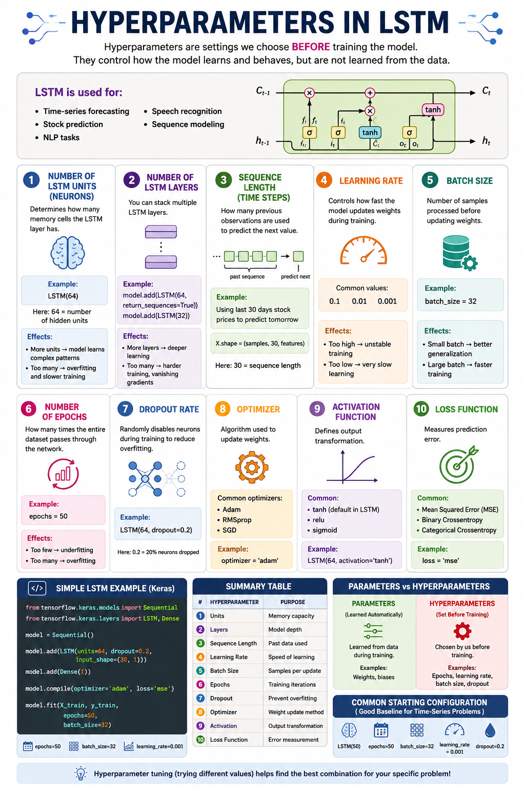

🧠 Hyperparameters in LSTM Networks
Hyperparameters are the configuration knobs you tune before training. Unlike weights & biases (learned from data), these govern how the network learns. Mastering them is key to building performant LSTM models for time‑series, NLP, and beyond.

Determines how many memory cells the LSTM layer has. Each unit maintains its own hidden state and cell state, collectively forming the layer's representational capacity.
- More units → learns complex patterns, higher capacity
- Too many → overfitting, slower training, more memory
- Typical range: 32–256 for moderate problems
Stack multiple LSTM layers so each layer processes the sequence output of the previous one, learning increasingly abstract temporal features.
- More layers → deeper hierarchical learning
- Too many → vanishing gradients, harder convergence
- return_sequences=True needed for intermediate layers
How many previous observations are fed into the network to predict the next value. Defines the temporal context window.
- Longer → more historical context
- Too long → vanishing gradients, noisy signals
- Choose based on domain knowledge (e.g., 30 days for monthly patterns)
The step size for weight updates during gradient descent. Arguably the most impactful hyperparameter.
- Too high → unstable training, loss explodes
- Too low → painfully slow convergence
- Adam default: 0.001 is a safe starting point
Number of samples processed before updating weights. Controls gradient estimate stability and training speed.
- Small (8–32) → noisier gradients, better generalization
- Large (64–256) → stable gradients, faster epoch time
- Powers of 2 are common for GPU efficiency
How many complete passes through the training dataset the model makes.
- Too few → underfitting, model hasn't learned enough
- Too many → overfitting, model memorizes noise
- Best practice: Use
EarlyStoppingcallback instead of a fixed number
Randomly disables a fraction of neurons during training to prevent co‑adaptation and reduce overfitting.
- 0.0 → no dropout (baseline)
- 0.2–0.3 → good starting range
- 0.5+ → aggressive regularization, may underfit
- Also available:
recurrent_dropoutfor recurrent connections
The algorithm that updates weights based on gradients. Different optimizers have different convergence properties.
- Adam → adaptive learning rates, great default
- RMSprop → good for recurrent networks
- SGD → simple but needs careful LR tuning
Defines the output transformation applied at each gate and the hidden state.
- tanh → default, outputs in [-1, 1]
- relu → faster but can cause exploding values
- sigmoid → used internally for gates (not usually changed)
Measures the prediction error — the model minimizes this during training.
- MSE → penalizes large errors heavily (regression)
- Cross‑entropy → for classification tasks
Each LSTM unit is a memory cell with input, forget, and output gates. The number of units defines the dimensionality of the hidden state vector h_t and cell state c_t.
How to choose: Start with 64–128. If validation loss plateaus while training loss drops, increase units. If overfitting, reduce or add dropout.
Stacking LSTM layers creates a hierarchical feature extractor. The first layer captures low‑level temporal patterns; deeper layers combine them into abstract representations.
Determines how far back the model looks. For time‑series forecasting, this is the number of lagged observations used as input.
Too short → misses long‑range dependencies. Too long → introduces noise and vanishing gradients. Use autocorrelation plots or domain cycles (e.g., 24 hours, 7 days, 30 days) to guide selection.
The learning rate scales the gradient step. It's the single most important training hyperparameter. Modern optimizers like Adam adapt it per‑parameter, but the base LR still matters.
Batch size trades off gradient accuracy vs training speed. Smaller batches inject noise that can help escape local minima.
GPU memory permitting, powers of 2 (16, 32, 64, 128) are standard. For very long sequences, smaller batches may be necessary.
Rather than guessing the right number of epochs, use early stopping to halt training when validation loss stops improving.
Set epochs to a large number (e.g., 200) and let early stopping do the work.
During training, each unit is randomly dropped with probability p. This prevents units from co‑adapting and forces the network to learn redundant representations.
- dropout → applied to input connections
- recurrent_dropout → applied to recurrent (hidden‑to‑hidden) connections
Caps the norm of gradients to prevent them from exploding, which is common in recurrent networks processing long sequences.
Typical values: clipnorm=1.0 or clipvalue=0.5. Essential for deep or long‑sequence LSTMs.
This example demonstrates a time‑series regression pipeline with all 10 hyperparameters clearly labeled and explained.
| # | Hyperparameter | Purpose | Typical Range / Default |
|---|---|---|---|
| 1 | Units | Memory capacity per layer | 32–256 |
| 2 | Layers | Model depth | 1–4 |
| 3 | Sequence Length | Past time steps used | 10–100 (domain‑dependent) |
| 4 | Learning Rate | Speed of weight updates | 0.0001–0.01 |
| 5 | Batch Size | Samples per weight update | 16–128 |
| 6 | Epochs | Training iterations | Use EarlyStopping |
| 7 | Dropout | Overfitting prevention | 0.1–0.5 |
| 8 | Optimizer | Weight update algorithm | Adam (default) |
| 9 | Activation | Output transformation | tanh (LSTM default) |
| 10 | Loss Function | Error measurement | MSE / Cross‑entropy |
📐 Parameters
Learned from data during training
- ✔ Weights (W)
- ✔ Biases (b)
- ✔ Cell state values
Updated by backpropagation
🎛️ Hyperparameters
Set by you before training
- ✔ Learning rate
- ✔ Batch size
- ✔ Number of layers
- ✔ Dropout rate
Chosen by experimentation
When starting a new time‑series problem, use this configuration as your first experiment, then tune from there:
From this baseline, tune units/layers first, then learning rate, then dropout if overfitting. Always validate on a hold‑out set.
🧠 Remember: Hyperparameters define the capacity, speed, and generalization of your LSTM. The network only learns the weights.